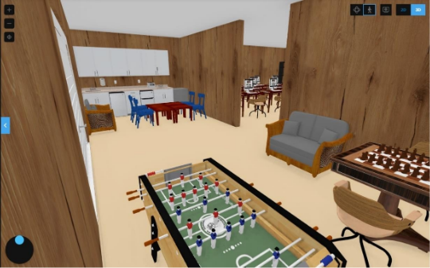
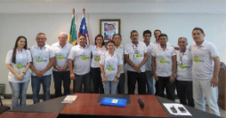
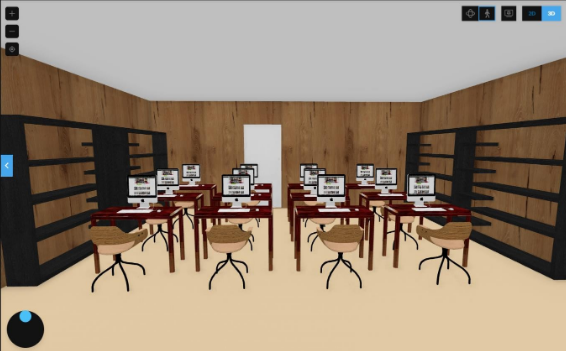

ManyGames ✓
@manygames
🎮 Estúdio de videojogos · Porto, Portugal · Criadores do Kill of Reason · 8M+ jogadores · Parceiros da Tencent
247 A seguir
1.2M Seguidores
Tweets
Respostas
Media
Gostos
ManyGames@manygames· 2h
🏢 As nossas instalações em Valongo, Porto — onde a magia acontece todos os dias! Salas de desenvolvimento, zona de convívio e muito mais.
#ManyGames #GameDev #Porto #BastidoresKoR
#ManyGames #GameDev #Porto #BastidoresKoR

💬 843
🔁 2.1K
❤️ 14K
🔗
ManyGames@manygames· 5h
🎮 O Kill of Reason Season 5 está a chegar! Novos heróis, novo mapa e mecânicas completamente renovadas. Prepara-te.
#KillOfReason #KoR #Season5 #Gaming
#KillOfReason #KoR #Season5 #Gaming
SEASON 5 · EM BREVE
💬 1.2K
🔁 3.4K
❤️ 18K
🔗
ManyGames@manygames· 1d
🤝 Na ManyGames acreditamos que a diversidade e inclusão são a base de uma equipa forte. Orgulhosos da nossa cultura colaborativa!
#Diversidade #Inclusão #ManyGames #Equipa
#Diversidade #Inclusão #ManyGames #Equipa

💬 567
🔁 1.8K
❤️ 9.3K
🔗
ManyGames@manygames· 2d
💻 Uma das nossas salas de desenvolvimento — onde o Kill of Reason ganha vida! Cada posto de trabalho é uma estação de criação.
#GameDev #BastidoresKoR #ManyGames
#GameDev #BastidoresKoR #ManyGames

💬 892
🔁 5.1K
❤️ 24K
🔗
ManyGames@manygames· 4d
📚 A ManyGames acredita no poder da educação. Promovemos soluções inovadoras para elevar o nível dos sistemas educacionais em todo o mundo.
#Educação #ImpactoSocial #ManyGames
#Educação #ImpactoSocial #ManyGames
💬 445
🔁 2.1K
❤️ 8.7K
🔗